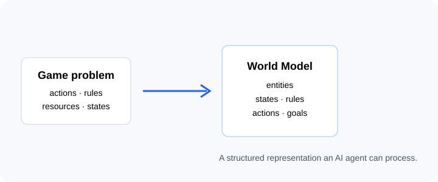
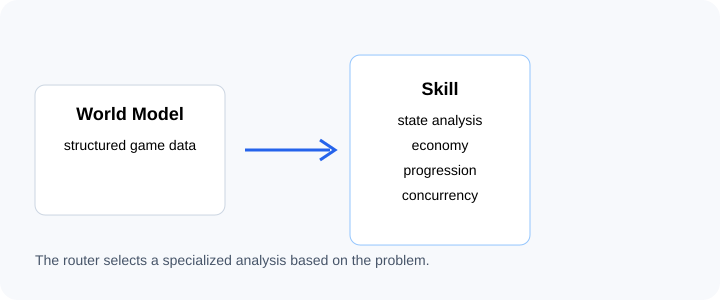
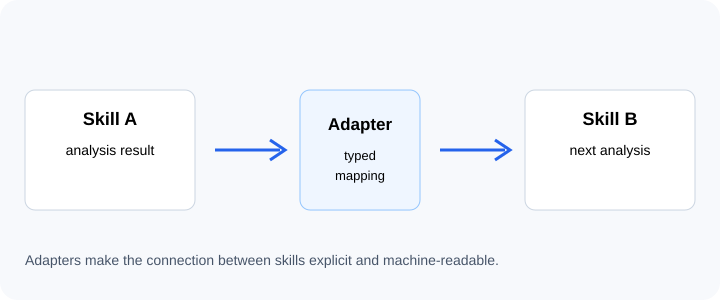

World Model
Shared ontology for entities, actions, states, rules, goals, knowledge, and hidden state.
FRAMEWORK · GAME DESIGN · SYSTEMS THINKING
GD Skill Codex provides structured skills that an AI agent can use to analyze game systems. Each skill receives structured data, performs a specific analysis, and returns typed results for other skills or for the designer.
PURPOSE
The project is intended to be used by AI agents as a structured set of game-design analysis skills. It defines inputs, outputs, validation rules, and connections between skills so an agent can break a problem into smaller analyses.
The system separates calculated results from assumptions and evidence. Results that require simulation or playtesting are marked accordingly.
ARCHITECTURE
The technical layer keeps data, validation, execution, and skill handoffs explicit.
Shared ontology for entities, actions, states, rules, goals, knowledge, and hidden state.
Adapters transform one skill’s outputs into explicit inputs for the next.
PowerShell runs deterministic analyses and produces claims, metrics, anomalies, and limitations.
AJV 8 validates world models, contracts, evidence, hypotheses, and reports.
Provenance, confidence, and epistemic status remain linked to results.
Simulations are derived evidence and remain separate from telemetry and playtesting.
EXPLORER
Use the visualization to browse the 15 lenses and their handoffs. Local execution remains available when the repository is served with server.js.
EXAMPLES
The files below can be opened, downloaded, or used as a basis for building new world models.
Minimal state-system example for transition and reachability verification.
JSON ↗ 02Simple network with raw material, a crafting transition, and a product for concurrency analysis.
JSON ↗ 03Fixture for stocks, flows, rates, and resource balance.
JSON ↗ 04Fixture for a discrete curve, acquisition, growth, and prestige.
JSON ↗TUTORIAL
The tutorial shows the basic data flow. In practice, an AI agent creates or receives a World Model, selects skills, and combines their results.

Describe what happens in the game: who acts, which resources exist, which rules constrain actions, and what behavior you want to investigate.

The Codex routes the problem to a specialized skill, such as states, concurrency, economy, progression, or space.

Claims and metrics show what was derived. Limitations show what still requires data, simulation, or player testing.
npm install, and run npm test. For the complete workflow, use the scripts in architecture/.OPEN SOURCE